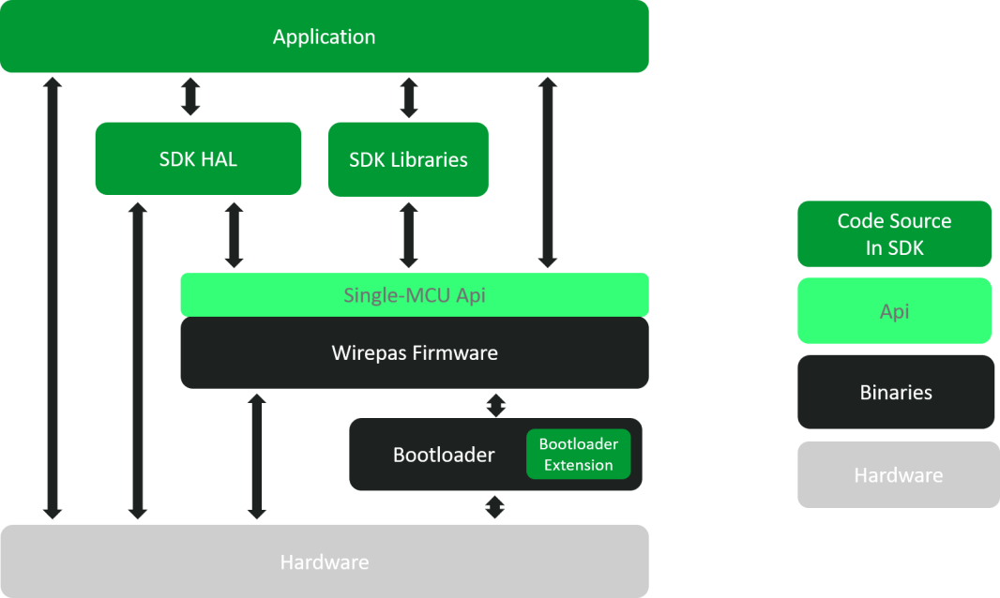

|
Wirepas Single-MCU SDK
|
|
Wirepas Single-MCU SDK
|
The Single-MCU operation allows an application to run on the same chip with Wirepas Mesh stack.

Main components are following:
Application firmware includes the application logic. There can be multiple applications (i.e. different kind of devices) in the same network. For example lighting network may contain lighting control switches and LED drivers.
With the provided SDK, a customer can write its own application, build it, and update a Wirepas Mesh network.
Single-MCU API Operation Principle describes the operation principle of the interface between the application and Wirepas Mesh stack. Memory partitioning and different regions are explained. The different ways the application is scheduled is also described.
SDK Environment describes the SDK package contents and available free processor resources for application.
How to develop applications with Single-MCU SDK describes guidance to write first application and various tips and recommendations for application development.
This is commonly various software components for peripheral usage, such as sensors/actuators and communication interfaces. Some of those are delivered as part of the SDK. This also contains drivers made by user of the SDKs, commonly shared between different _applications.
For HAL services offered by the SDK, see API services by SDK.
Wirepas Mesh stack provides Wirepas Mesh Single-MCU API for application to use stack services and run tasks on the MCU.
Application API describes the programming interface.
These libraries are wrappers on top of the single MCU api. Some services offered by the stack are quite low level and these wrapper libraries offer a higher abstraction level. Main example is the app_scheduler abstracting the single periodic work offered by stack.
Stack includes the Wirepas Mesh communication stack and Wirepas scheduler for enabling the application operation in the same MCU. Wirepas Mesh HAL includes all hardware abstractions and drivers needed by the stack, such as a radio driver. Note that drivers for peripherals that are not needed by the stack itself, are not implemented in stack.
Wirepas Mesh scheduler provides priority-based cooperative scheduling, i.e. all the tasks are run to completion. The tasks are scheduled based on their priorities and their execution times. The Wirepas Mesh stack has strict real-time requirements (accurate synchronization of messaging) and has the highest priority. Thus, it is not recommended to do processing intensive (time consuming) tasks on the application side. Real-time guarantees are not provided to the application.
Wirepas provides a bootloader binary. Its main purpose is to do the basic basic initialization of the hardware but also handle the processing of stored scratchpad in the flash received by the stack during an otap. Bootloader is in charge of the flash management and contains the flash partitioning that is configured through an .ini file.
Bootloader can be extended from the SDK. Main usage is to support an external flash. How to use it is described in a separated application note that will be available soon from here.
This includes all the hardware of the device including the processor core, radio for wireless communication and application-specific peripherals.
Peripherals can be grouped into three categories:
For details on this, check EFR32 resources or Nordic nRF52XXX resources according to your architecture.
 1.8.13
1.8.13